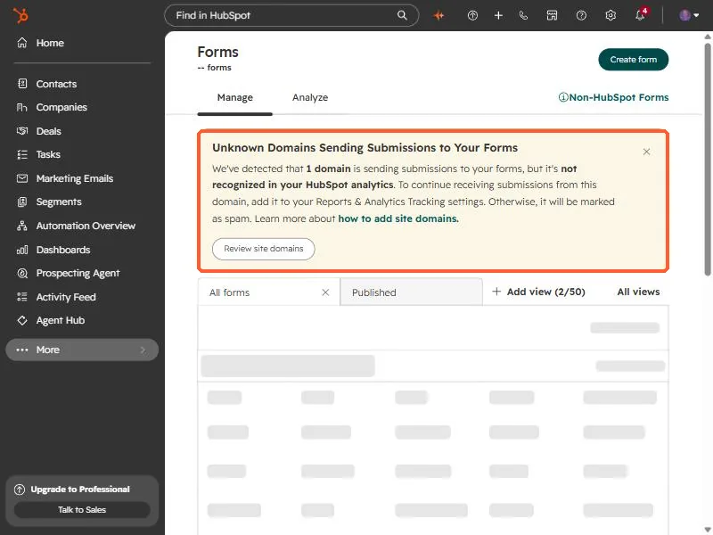
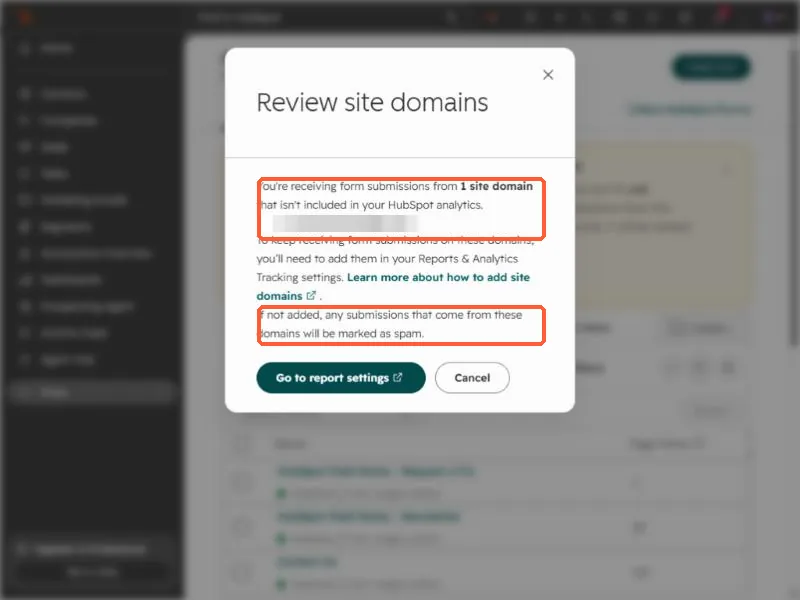
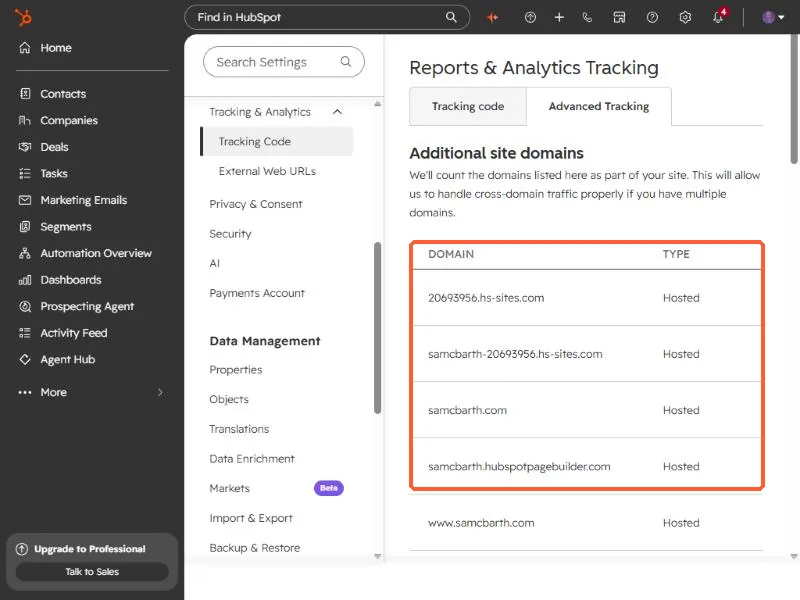
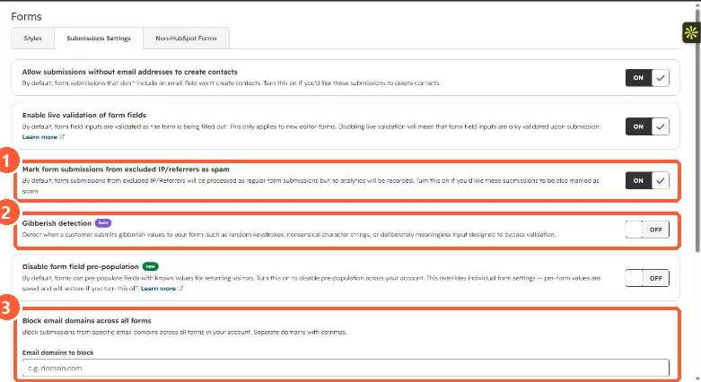
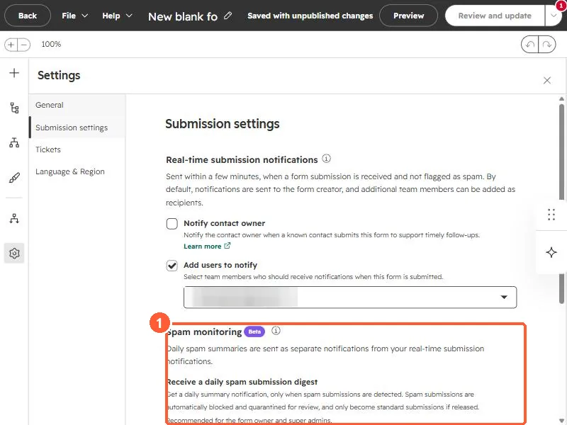
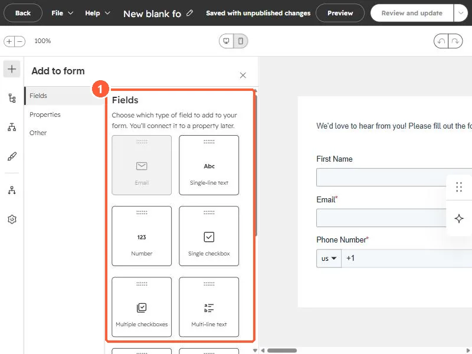
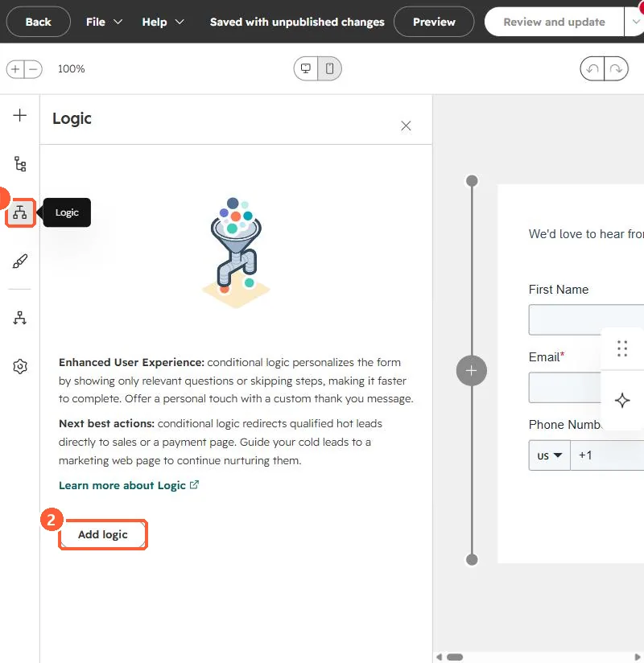
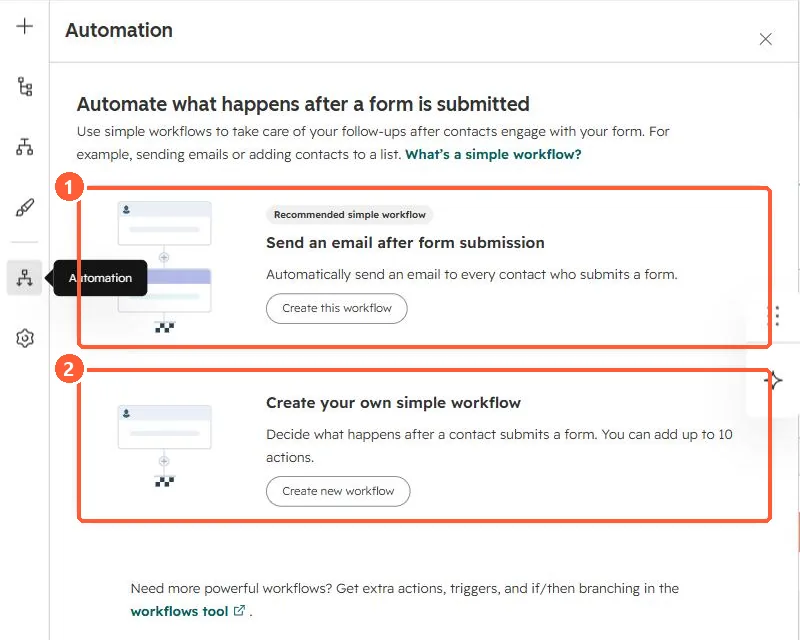
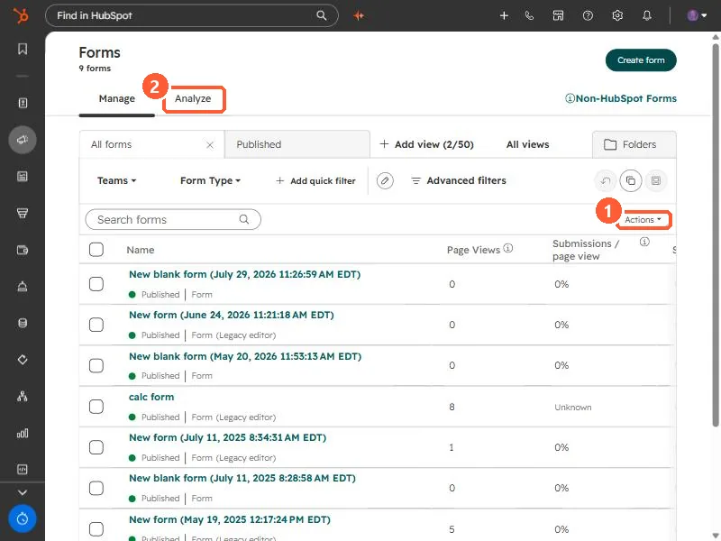

Short answer
Most "missing" form submissions are sitting in the form's spam list. The most common cause is a form embedded on a domain HubSpot does not recognize, flagged as Unregistered Site Domain: add the domain under Tracking & Analytics, Advanced Tracking, Additional site domains, then Release to submissions. Spam submissions you do not release are deleted after 90 days. Spam control is reCAPTCHA v3 per form plus account-wide settings for blocked email domains and gibberish detection. File upload fields take up to 100 MB. Conditional logic needs Marketing Hub or Content Hub Professional. Unpublish a form instead of deleting it to stop new submissions and keep the old ones.
1. Submissions marked as spam
When a form on an unrecognized site gets submissions, HubSpot shows a warning above the Forms list naming the problem:


Click Review site domains to see which domain it is. The domain is blurred here:


- Go to Settings, Tracking & Analytics, Tracking Code, Advanced Tracking and add the domain under Additional site domains. Check each subdomain that hosts a form. Only add domains you recognize.
- On the Forms page, click the number in the Spam Submissions column, check the spam type for each row, select the real ones, and click Release to submissions.


A released submission keeps its original date and can create or update contacts and trigger workflows. Registering the domain only fixes new submissions, and unreleased spam is deleted automatically 90 days after it arrives, so check the list soon.
The other spam types HubSpot uses: a URL or HTML in a name field, a blocklisted email, a malicious script, gibberish text (Marketing Hub or Content Hub Professional and Enterprise), a failed reCAPTCHA, and Excluded source, which means the IP or referrer is on your excluded traffic list.
2. Spam controls
- reCAPTCHA v3 runs invisibly. Turn it on per form in the editor's left panel under Other form elements, CAPTCHA (spam prevention). You can raise spam sensitivity if spam still gets through.
- Account-wide settings in form submission settings: excluded IP spam (1), gibberish detection (2), and blocking email domains across all forms (3).


- Block free email providers rejects addresses from HubSpot's published list of free email domains. Some disposable domains are blocked whether or not you tick it. You can download the list as CSV, edit it, and paste it into the blocked domains field. If your customers use personal email, leave this off for their forms.
- Spam monitoring: my demo portal's submission settings also show a Spam monitoring beta with a daily spam digest (1).


3. Fields: file upload and required fields
Field types are in the Add to form panel (1). File is further down the list.


- A file upload field accepts up to 100 MB, single or multiple file. Multiple file fields have no file count limit as long as the total stays under 100 MB.
- Uploaded files are stored with the submission and the contact property.
- A required field cannot be hidden.
4. Conditional logic and redirects
The Logic panel (1) in the form editor shows only relevant questions, skips steps, sets a custom thank-you message, or redirects visitors, for example sending qualified answers to a meetings link. Click Add logic (2). It needs Marketing Hub or Content Hub Professional or Enterprise. The legacy editor's version was dependent fields, which could only use existing fields.


On HubSpot pages, the redirect set in the page editor's form module overrides the form's own redirect. Passing submitted values into the redirect URL is a developer job in the embed code, see forms API and embedding.
5. Follow-up email after submission
In the form's Automation panel, Send an email after form submission (1) creates a simple workflow with a follow-up email. You can also build your own simple workflow (2).


Free tools allow one simple workflow per form with one action. Marketing Hub Starter allows up to 10 actions. Sending the submission to someone on your team is a separate notification setting.
6. Manage, unpublish and delete
The forms list has Actions (1) for export, clone, unpublish and delete (Edit forms permission), and an Analyze tab (2). Comparing forms needs Marketing Hub Professional or Enterprise.


Unpublish stops submissions but keeps the form, its submissions and analytics. Share links and embeds show "This form is no longer accepting submissions", and you can republish any time. It is the right move for an event registration after the event. Delete only when you are sure you do not need the data.
7. What is changing for 2027
- Legacy forms are reference only. HubSpot's KB marks the legacy editor articles as reference for existing forms and recommends the updated editor for new forms. Some features, such as dependent fields, have new-editor equivalents (conditional logic) with different tier rules.
- Domain registration matters more. Forms embedded on any site not listed in Additional site domains get flagged as spam, and the flagged submissions expire after 90 days. Add every new microsite or subdomain when you launch it.
- Spam monitoring is in beta in some portals, with a daily digest of flagged submissions.
Common questions
A form submission did not create a contact. Where is it?
Check the form's Spam Submissions column. Unregistered Site Domain and Excluded source are the usual reasons. Release the real ones.
My own test submissions are marked as spam.
If the spam type is Excluded source, your IP is on the excluded traffic list. That is working as designed. The list is under Tracking & Analytics, Advanced Tracking, Exclude traffic.
How large can an uploaded file be?
100 MB per file upload field, single or multiple.
Should I delete an old form?
Unpublish it instead. Submissions and analytics stay, and you can republish later.
Sources
- HubSpot Knowledge Base: Manage spam form submissions
- HubSpot Knowledge Base: Set up a HubSpot form on an external site
- HubSpot Knowledge Base: Verify form submissions with reCAPTCHA v3
- HubSpot Knowledge Base: Domains blocked from form submissions
- HubSpot Knowledge Base: Edit form fields
- HubSpot Knowledge Base: Create and customize forms
- HubSpot Knowledge Base: Create forms (legacy)
- HubSpot Knowledge Base: Redirect a form (legacy)
- HubSpot Knowledge Base: Send an email response after a form submission
- HubSpot Knowledge Base: Manage your forms
- HubSpot Knowledge Base: Unpublish a HubSpot form